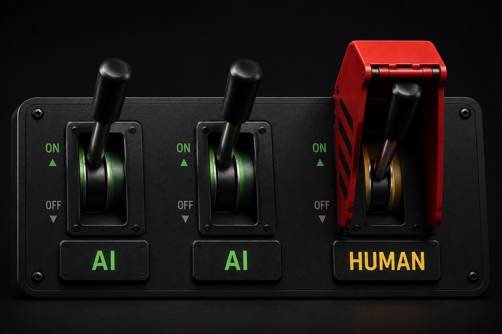
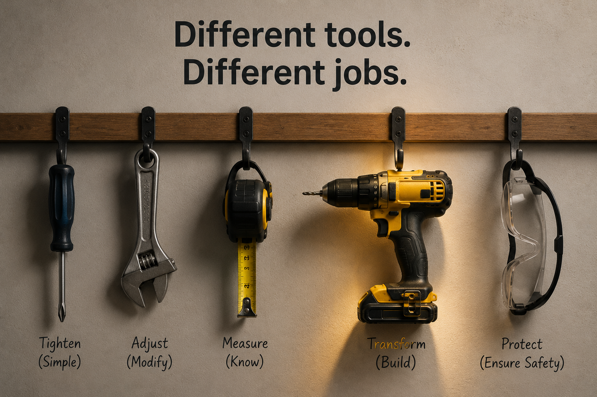
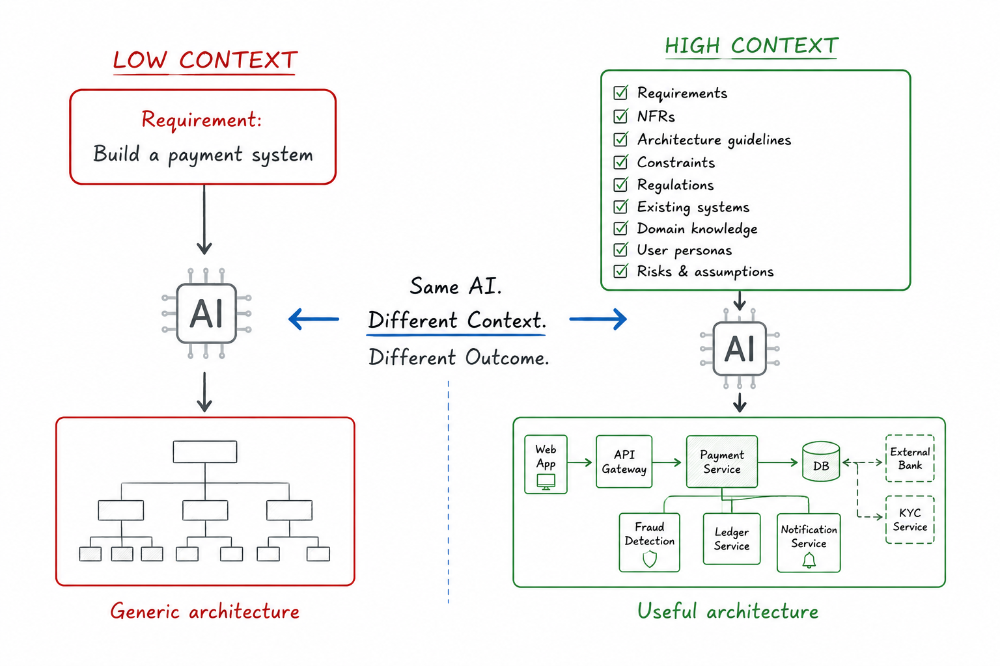
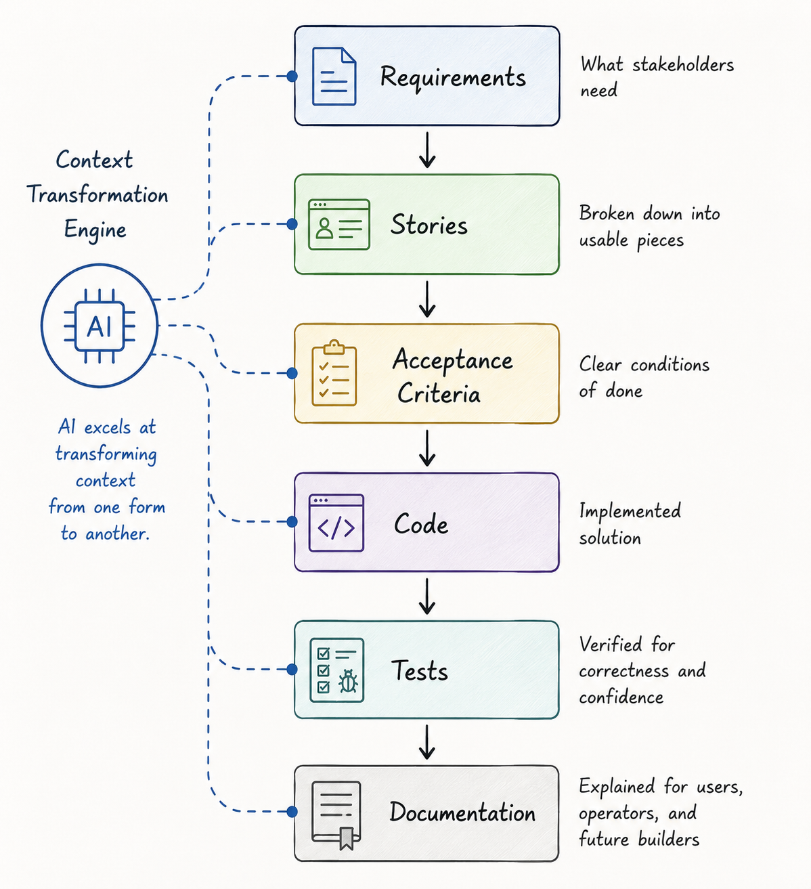

In the earlier articles of this series, we looked at AI assistants primarily as productivity tools rather than replacements for software engineers. We explored why context matters, how repositories can be structured to help AI understand a codebase better, and how engineering practices can be used to keep AI-generated work reliable and under control.
Having established that foundation, it is worth stepping back and asking a broader question: where exactly do AI assistants fit within the software engineering process?
Software engineering is not a single activity. Over several decades, the industry has evolved a structured set of practices to transform business ideas into working software systems. Whether a team follows Agile, Scrum, SAFe, or a more traditional SDLC, the overall process is typically broken down into activities such as requirements analysis, solution design, implementation, testing, deployment, and documentation. Each activity has a distinct purpose, expected outcomes, and often requires different skills and perspectives.
Traditionally, all of these activities have been performed by humans. Today, AI assistants are capable of contributing to almost every stage of this process. They can help analyze requirements, suggest designs, generate code, create tests, review changes, and draft documentation. This naturally raises a set of important questions.
Do AI assistants add equal value across all software engineering activities? Are some tasks better suited for AI than others? Should every task be delegated to AI whenever possible, or are there areas where human ownership remains essential? More importantly, is there a practical framework that can help us decide?
There is another, much larger discussion about whether AI fundamentally changes the software engineering paradigm itself. That is an important topic, and we will return to it later in this series. For the purpose of this article, however, we will make a simpler assumption. We will assume that the software development process remains largely unchanged and that AI assistants are introduced as a new tool within it.
Under that assumption, let us examine which software engineering tasks AI handles particularly well, where human judgment continues to matter most, and how the two can work together effectively.
All Engineering Tasks Are Not Equal
Software engineering involves many different kinds of work. Some tasks are highly structured and repetitive. Others require judgment, experience, and business understanding. Activities such as requirements analysis, architecture, coding, testing, deployment, documentation, and production support may all belong to the same software development process, but they are fundamentally different in nature.
Because these tasks are different, it would be unreasonable to expect a single tool to perform equally well across all of them.
Using AI for every engineering task is a little like using a power drill for every job in a workshop. A power drill is an extremely useful tool, but its effectiveness depends on the task at hand. You would not use it to measure dimensions, inspect quality, or decide what should be built in the first place. Similarly, AI assistants can be remarkably effective in some areas of software engineering while providing only limited value in others.

Another important consideration is that AI performs best when tasks are clearly defined. Well-structured tasks often have explicit objectives, constraints, acceptance criteria, and examples of expected outcomes. The more clearly a task can be described, the easier it becomes for an AI assistant to contribute effectively. As tasks become more ambiguous, involve trade-offs, or require business judgment, the importance of human involvement increases.
At this point, it is also useful to distinguish between automation and AI assistance, as the two are often confused.
Automation follows predefined rules to produce predictable outcomes. A CI/CD pipeline that automatically builds software after a commit is an example of automation. The system is not making decisions; it is executing a sequence of instructions defined by humans.
AI assistance is different. Instead of following a fixed set of rules, an AI assistant interprets context and generates an output based on patterns learned from data. When an AI assistant proposes a refactoring, generates a unit test, summarizes a requirement, or suggests an architectural approach, the exact output is not predetermined. The AI is effectively making a prediction about what a useful outcome might look like.
This distinction is important because software engineering tasks vary not only in complexity but also in the amount of judgment they require. As we will see, tasks that are repetitive, well-structured, and easy to verify tend to be good candidates for AI assistance. Tasks involving business context, trade-offs, accountability, and decision-making typically require stronger human ownership.
A Practical AI-Human Task Matrix
The discussion so far has been largely conceptual. Let us now make it more concrete.
One of the most common questions teams ask when adopting AI assistants is:
Which software engineering tasks should we actively delegate to AI, and which tasks should remain under human ownership?
There is rarely a simple yes-or-no answer. In most cases, AI and humans contribute together, with different levels of responsibility and oversight. The goal is therefore not to replace human involvement, but to determine how work can be divided most effectively.
The following matrix examines a broad range of software engineering activities and evaluates them from four perspectives:
- Task — The activity being performed.
- AI Capability — How effectively an AI assistant can contribute today.
- Human Role — The level of human ownership and involvement required.
- Context Needed by AI — The information required for the AI assistant to produce useful outcomes.
Rather than viewing AI as a replacement for software engineers, it is more useful to think of it as an additional participant in the software development process. The matrix below can help identify where that participant is likely to be most effective. The matrix is intentionally detailed. Readers need not agree with every individual assessment. The more important observation is the pattern that emerges across categories of work.
Requirements & Planning
| Task | AI Capability | Human Role | Context Needed by AI |
|---|---|---|---|
| Requirements Summarization | Excellent | Validate | Requirements documents, meeting notes |
| Requirements Clarification Questions | Good | Answer & Prioritize | Requirements, business goals |
| User Story Drafting | Good | Review | Epics, requirements |
| Acceptance Criteria Drafting | Good | Approve | User stories, business rules |
| Use Case Identification | Good | Validate | Business requirements |
| Functional Decomposition | Good | Review | Business process descriptions |
| Impact Analysis | Assist | Confirm | Existing system knowledge |
| Effort Estimation | Limited | Own | Historical data, team capability |
| Sprint Planning Suggestions | Assist | Own | Backlog, velocity data |
| Prioritization | Limited | Own | Business goals, roadmap |
| Dependency Identification | Good | Validate | Requirements, architecture |
| Risk Identification | Good | Review | Requirements, project context |
| Release Planning | Assist | Own | Roadmap, dependencies |
Architecture & Design
| Task | AI Capability | Human Role | Context Needed by AI |
|---|---|---|---|
| Architecture Alternatives | Good | Evaluate & Decide | Requirements, NFRs |
| High-Level Architecture | Assist | Own | Business objectives, constraints |
| Technology Selection | Assist | Own | Team skills, constraints |
| Design Pattern Suggestions | Excellent | Review | Functional requirements |
| API Design | Very Good | Review | Requirements, standards |
| Data Model Design | Very Good | Review | Domain model |
| Database Schema Design | Very Good | Review | Data requirements |
| Event Design | Good | Review | Business workflows |
| Sequence Diagram Drafting | Excellent | Validate | Requirements, architecture |
| Component Identification | Good | Review | System requirements |
| Scalability Recommendations | Good | Evaluate | NFRs, expected load |
| Resiliency Recommendations | Good | Evaluate | Architecture, SLAs |
| Integration Design | Good | Review | System interfaces |
| Trade-off Analysis | Assist | Own | Business and technical constraints |
Implementation & Coding
| Task | AI Capability | Human Role | Context Needed by AI |
|---|---|---|---|
| Boilerplate Code Generation | Excellent | Minimal Review | Coding standards |
| CRUD Implementation | Excellent | Review | Data model, requirements |
| API Endpoint Development | Very Good | Review | API contracts |
| Business Logic Implementation | Good | Review Thoroughly | Requirements, domain rules |
| Code Translation Between Languages | Excellent | Validate | Existing source code |
| SDK Usage Examples | Excellent | Validate | API documentation |
| SQL Query Generation | Very Good | Review | Schema, business requirements |
| Configuration Generation | Excellent | Review | Framework standards |
| Infrastructure as Code | Very Good | Review | Cloud architecture |
| Migration Script Generation | Good | Review | Database schema |
| Legacy Code Understanding | Good | Validate | Existing codebase |
| Code Refactoring | Good | Approve | Existing code, architecture |
| Code Modernization | Good | Review | Legacy implementation |
| Technical Debt Identification | Good | Prioritize | Codebase, architecture |
| Coding Standard Compliance | Excellent | Review Exceptions | Coding standards |
Testing & Quality Assurance
| Task | AI Capability | Human Role | Context Needed by AI |
|---|---|---|---|
| Unit Test Generation | Excellent | Verify Quality | Code, acceptance criteria |
| Integration Test Generation | Good | Verify Coverage | APIs, workflows |
| Test Data Generation | Excellent | Review | Data model |
| Boundary Test Identification | Excellent | Validate | Business rules |
| Negative Test Generation | Excellent | Validate | Requirements |
| Regression Test Suggestions | Good | Review | Existing tests |
| Test Case Documentation | Excellent | Validate | Test scenarios |
| Coverage Gap Identification | Good | Confirm | Code, test suite |
| Mock Generation | Excellent | Review | Interfaces |
| Performance Test Scenario Generation | Good | Review | NFRs |
| Security Test Suggestions | Good | Validate | Security requirements |
| Exploratory Testing Ideas | Good | Evaluate | Application context |
Security & Compliance
| Task | AI Capability | Human Role | Context Needed by AI |
|---|---|---|---|
| Static Security Review | Good | Own Risk Decision | Code, standards |
| OWASP Vulnerability Detection | Good | Validate | Source code |
| Secure Coding Recommendations | Excellent | Review | Technology stack |
| Threat Modeling Assistance | Assist | Own | Architecture, trust boundaries |
| Vulnerability Remediation Suggestions | Good | Validate | Findings, codebase |
| Security Documentation Drafting | Excellent | Validate | Architecture |
| Compliance Mapping | Assist | Own Accountability | Regulations |
| Audit Evidence Preparation | Good | Review | Controls, processes |
| Risk Assessment | Assist | Own Decision | Business impact |
| Privacy Impact Review | Assist | Own | Data flows, regulations |
Operations & Reliability
| Task | AI Capability | Human Role | Context Needed by AI |
|---|---|---|---|
| Log Analysis | Excellent | Confirm Findings | Logs |
| Incident Summary Generation | Excellent | Validate | Incident records |
| Root Cause Analysis | Good | Confirm | Logs, telemetry |
| Production Incident Investigation | Assist | Lead Investigation | Monitoring data |
| Monitoring Rule Suggestions | Good | Approve | Architecture, SLOs |
| Alert Tuning Suggestions | Good | Approve | Monitoring history |
| Runbook Drafting | Excellent | Validate | Operational procedures |
| Capacity Planning Suggestions | Good | Review | Usage metrics |
| Performance Optimization Suggestions | Good | Benchmark & Decide | Metrics |
| Cost Optimization Suggestions | Good | Validate | Cloud usage data |
| Release Notes Generation | Excellent | Validate | Commits, PRs |
| Deployment Checklist Generation | Excellent | Validate | Deployment process |
Collaboration & Documentation
| Task | AI Capability | Human Role | Context Needed by AI |
|---|---|---|---|
| README Creation | Excellent | Validate | Repository structure |
| Technical Documentation Drafting | Excellent | Review | Codebase, architecture |
| Architecture Documentation | Good | Validate | Architecture diagrams |
| Meeting Notes Summarization | Excellent | Validate | Meeting transcripts |
| Decision Record Drafting | Good | Approve | Design discussions |
| Knowledge Base Article Creation | Excellent | Review | Existing documentation |
| Release Communication Drafting | Excellent | Review | Release scope |
| Onboarding Guides | Good | Validate | Team practices |
| FAQ Generation | Excellent | Review | Product documentation |
Leadership, Product & Governance
| Task | AI Capability | Human Role | Context Needed by AI |
|---|---|---|---|
| Product Roadmap Decisions | Poor | Own Completely | Market, customers |
| Feature Prioritization | Limited | Own | Business strategy |
| Stakeholder Alignment | Poor | Human-Led | Organizational context |
| Trade-off Decisions | Assist | Own | Business and technical constraints |
| Budget Decisions | Poor | Own | Financial context |
| Vendor Evaluation | Limited | Own | Commercial factors |
| Hiring Decisions | Assist | Human Owns | Interviews, requirements |
| Performance Reviews | Assist | Human Owns | Team context |
| Mentoring Engineers | Assist | Human Owns | Individual growth goals |
| Conflict Resolution | Poor | Human-Led | People dynamics |
| Team Leadership | Poor | Human-Led | Human relationships |
| Organizational Change Management | Poor | Human-Led | Organizational context |
| Executive Communication | Assist | Human Owns | Business strategy |
| Accountability for Outcomes | Human Only | Human Owns | Real-world consequences |
A Simple Mental Model
While the matrix provides a detailed view, most day-to-day decisions can be reduced to a simple question:
Is this task primarily about execution, or is it primarily about judgment?
Tasks that are repetitive, structured, pattern-based, and easy to verify are generally good candidates for AI assistance. These tasks often have clear inputs, clear outputs, and well-defined acceptance criteria.
Examples include:
- Boilerplate code generation
- Unit test generation
- Documentation drafting
- Log analysis
- API implementation
On the other hand, tasks involving ambiguity, trade-offs, business context, organizational alignment, or accountability continue to require stronger human ownership.
Examples include:
- Requirements prioritization
- Architecture decisions
- Security risk acceptance
- Product strategy
- Team leadership
Another useful way to think about this is that AI performs best when the question has many acceptable answers but the outcome can still be verified. Humans remain essential when the problem itself must first be defined or when someone must ultimately be accountable for the outcome.
As a rule of thumb:
The more a task resembles execution, the more AI can help.
The more a task resembles judgment, the more human ownership matters.
This distinction explains most of the patterns observed in the matrix and provides a practical framework for deciding where AI assistants can add value within your own software engineering process.
An Important Observation: The Matrix Is Not Fixed
One important caveat is that the matrix should not be interpreted as a permanent ranking of AI capabilities.
The effectiveness of an AI assistant is heavily influenced by the quality of context available to it.
In other words, the same task can move up or down the matrix depending on the information provided.
Consider architecture design as an example.
If an AI assistant is asked to design a system with little more than a one-sentence requirement, the results are likely to be generic and of limited practical value.
However, if the same assistant is provided with detailed requirements, non-functional requirements, existing architecture diagrams, team constraints, deployment considerations, and regulatory requirements, its recommendations often become significantly more useful.

The same pattern can be observed across many engineering activities.
Requirements become easier to analyze when business objectives are clearly documented. Code generation improves when coding standards and examples are available. Test generation improves when acceptance criteria are precise. Documentation becomes more accurate when architecture and implementation details are well understood.
This observation helps explain why context has been a recurring theme throughout this series.
Better prompts help.
Better repositories help more.
Better work context helps even more.
The quality of AI outcomes is often determined less by the capability of the model and more by the quality of information available to it.
Viewed this way, the matrix is not simply a classification of tasks. It is also a reflection of context maturity.
Organizations that provide rich context to their AI assistants will often find that more tasks become suitable for AI assistance. Organizations that provide little context will discover the opposite.
The question is therefore not only:
Which tasks are suitable for AI?
but also:
What context must we provide to make AI successful at those tasks?
Where AI Truly Excels: Context Transformation
The matrix reveals an interesting pattern.
Many discussions about AI focus on specific activities such as coding, testing, or documentation. However, these activities are not what AI is fundamentally good at.
The real strength of AI lies elsewhere.
AI is exceptionally good at transforming information from one representation into another.
Software engineering is full of such transformations. Throughout the software development lifecycle, information continuously moves between different forms.
For example:
Business Requirement
↓
User Story
↓
Acceptance Criteria
↓
Solution Design
↓
Code
↓
Tests
↓
Documentation
At every stage, engineers are taking information that already exists and reshaping it into a different artifact that is useful for the next stage of the process.
This turns out to be a task that AI handles remarkably well.
Consider some common examples:
| Input | Output |
|---|---|
| Meeting Notes | Requirements Summary |
| Requirements | User Stories |
| User Stories | Acceptance Criteria |
| Acceptance Criteria | Test Cases |
| Solution Design | Code Skeleton |
| Existing Code | Documentation |
| Logs & Alerts | Incident Summary |
| Pull Requests | Release Notes |
| Architecture Diagrams | Technical Documentation |
In each of these examples, the AI is not inventing business intent. It is transforming existing information into another useful form.
This observation also explains why context is so important.
The quality of the output is directly influenced by the quality of the input. Poor requirements often produce poor user stories. Incomplete architecture descriptions often produce incomplete implementations. Missing business rules often produce incorrect test cases.
The AI can only transform the information it receives.
This is one of the reasons we spent so much time discussing context in the earlier articles of this series. Better repositories, better work context, and better engineering controls all improve the quality of information available to the AI. As a result, the transformations it performs become more accurate and more useful.
High-Volume Artifact Generation
Another area where AI performs exceptionally well is producing large quantities of engineering artifacts quickly.
Examples include:
- Boilerplate code
- CRUD APIs
- Unit tests
- Mock implementations
- Configuration files
- Documentation drafts
- Release notes
These tasks are often repetitive and time-consuming for humans, but they contain patterns that AI can reproduce efficiently.
The value is not simply faster typing. The value is reducing the amount of engineering effort spent on routine artifact creation.
Information Synthesis
AI is also highly effective at consuming large amounts of information and producing concise summaries.
Examples include:
- Summarizing requirements documents
- Reviewing lengthy pull requests
- Analyzing large log files
- Creating incident summaries
- Generating architecture overviews
- Producing executive updates
Humans are often constrained by the amount of information they can process in a limited period of time. AI assistants can rapidly consume and organize large volumes of information, helping engineers focus their attention on decision-making rather than information gathering.
Viewed through this lens, the matrix becomes easier to understand.
AI is not primarily a replacement for engineers.
It is a highly capable transformation and synthesis engine that can help move information through the software engineering lifecycle more efficiently.
Where AI Is Useful but Dangerous
The matrix reveals a middle category of work that deserves special attention.
These are tasks where AI can provide substantial value, but where blindly accepting its output can create significant problems. In these situations, the AI often produces results that look reasonable and professionally written, yet may be incomplete, contextually incorrect, or based on faulty assumptions.
This is where many teams get into trouble.
Refactoring
AI assistants are often excellent at local refactoring. They can identify duplication, simplify conditional logic, extract methods, and modernize code structures.
The challenge is that AI usually sees only a portion of the system at a time. A refactoring that appears cleaner in isolation may introduce subtle side effects elsewhere in the application.
AI can suggest refactorings effectively.
Humans must determine whether those refactorings are actually safe.
Debugging and Root Cause Analysis
AI is remarkably good at interpreting logs, stack traces, and error messages. It can quickly generate plausible explanations and suggest possible fixes.
The danger is that plausibility is not the same as correctness.
Many engineers have experienced situations where the AI produces a convincing diagnosis, only for the actual root cause to lie somewhere completely different.
AI can accelerate investigations.
Humans must validate conclusions.
Architecture Suggestions
Given a set of requirements, AI can generate architecture diagrams, service decompositions, integration patterns, and technology recommendations in seconds.
However, architecture is not simply about identifying technically possible solutions. It is about selecting the most appropriate solution within a specific business context.
Factors such as team capability, budget, timelines, operational maturity, and organizational constraints are often invisible to the AI.
AI can propose options.
Humans must make trade-offs.
Performance Optimization
AI understands many common optimization techniques and can suggest improvements involving caching, databases, infrastructure, and application design.
The challenge is that optimization decisions always involve trade-offs. A technically superior solution may increase operational complexity, development effort, or infrastructure costs.
AI can identify opportunities.
Humans must decide whether those opportunities are worth pursuing.
The Common Pattern
Notice the pattern across all of these examples.
The AI is not failing because it lacks technical knowledge.
The risk arises because the task requires context, trade-offs, or assumptions that may not be fully visible to the model.
A useful rule of thumb is:
The more a task involves judgment rather than execution, the more carefully AI-generated outputs should be reviewed.
These tasks are often where AI delivers some of its highest value. They are also where human oversight becomes most important.
Where Humans Must Remain in Charge
As we move further toward activities involving judgment, accountability, and business context, human ownership becomes increasingly important.
Requirements and Business Intent
AI can summarize requirements.
AI can identify ambiguities.
AI can suggest missing acceptance criteria.
What AI cannot reliably determine is what the business actually wants.
Requirements often contain hidden assumptions, competing priorities, organizational politics, and unstated constraints.
These are areas where human stakeholders must continue to provide direction.
The role of AI is to assist understanding, not define intent.
Architecture and Trade-Offs
Architecture is frequently misunderstood as a purely technical exercise.
In reality, architecture is the process of making trade-offs under constraints.
Questions such as:
- Build versus buy
- Monolith versus microservices
- Performance versus simplicity
- Speed versus maintainability
cannot be answered through technical knowledge alone.
They require business context and accountability.
AI can contribute valuable options, but humans must own the final decision.
Security and Risk Acceptance
AI can identify vulnerabilities.
AI can recommend mitigations.
AI can explain security best practices.
What AI cannot do is accept risk on behalf of an organization.
Every security decision ultimately represents a business decision.
Someone must decide whether a risk is acceptable, whether a mitigation is worth the cost, and whether a control is sufficient.
Those responsibilities remain firmly human.
Governance and Compliance
The same principle applies to governance activities.
Whether the topic is banking regulation, privacy requirements, internal controls, or audit obligations, AI can assist interpretation and implementation.
However, accountability for compliance outcomes cannot be delegated.
Organizations are held accountable for the decisions they make, not for the recommendations generated by their tools.
From Executor to Decision Maker
A common concern surrounding AI is that software engineers may become less relevant as AI capabilities continue to improve.
The task matrix suggests a different conclusion.
Many engineering activities are becoming easier to execute. Boilerplate code, routine testing, documentation, and a variety of implementation tasks can increasingly be delegated to AI assistants.
At the same time, the activities that require judgment, context, trade-offs, leadership, and accountability remain difficult to automate.
This suggests that the role of software engineers may gradually evolve rather than disappear.
Engineers may spend less time producing artifacts and more time:
- Understanding requirements
- Defining constraints
- Evaluating trade-offs
- Managing risk
- Reviewing outcomes
- Providing direction
In other words, the value of software engineers may shift from execution toward decision-making.
AI changes how software is built.
Human judgment determines whether the right software gets built.
Conclusion
AI is becoming increasingly capable of performing software engineering tasks. The real challenge is no longer deciding whether AI can do the work.
The challenge is deciding which work should be delegated, which should be guided, and which responsibilities must remain firmly human.